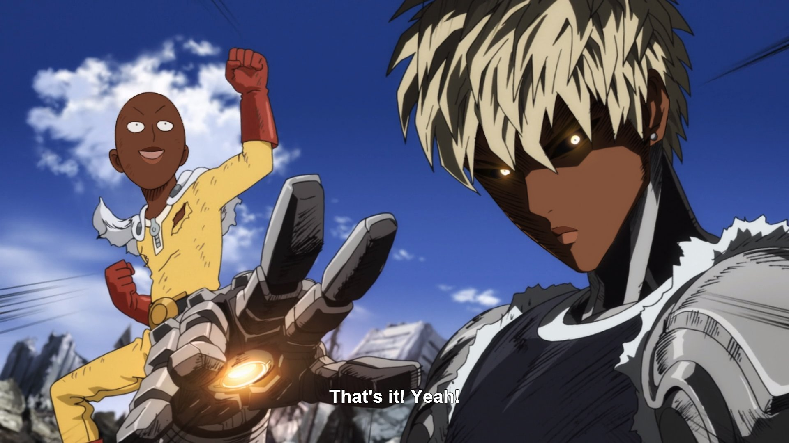

“There is always something more to learn. Even for a master.” -Master Oogway, Kung Fu Panda
How's it going?!
My name is Brisaac Johnson, and I am excited to have you in my class! And can't for us to start your programming journey!
But before we get into the fun stuff, heres a bit about me; I received a B.S. in Computer Science at the University of North Georgia, Dahlonega, GA, USA. During my time at the University of North Georgia, I participated in the Ronald E. McNair Program as a McNair Scholar and obtained the following honors: Oustanding Performance as a McNair Scholar, Influencer Award(x2), Mike and Lynn Cottrell Scholarship Recipient(x2), Marion C. Wicht Award.
I am currently pursuing a Ph.D. degree in Computer Science at The University of Alabama, Tuscaloosa, AL, USA. As a Ph.D. student, I was awarded the Outstanding ACM Graduate Teaching Award, and I am the recipient of the GAANN Fellowship. My research interest includes the following: autonomous vehicles, physiological data, Human-centered computing, situation awareness, robotics, and taxonomy.
My Teaching Statement
Being a minority in a STEM field, I understand the feeling of not belonging and feeling as if your voice is never heard. Therefore, it is my obligation to create an inclusive classroom environment that encourages new ideas and introduces tools to students that can help them outside the classroom. Each person who comes into my classroom has a unique story; because of this, one must consider their individual needs and design activities, and create assignments and lectures that meet these needs. I believe in a hands-on approach and leading with real examples through projects that help develop communication, organization, and collaboration skills among their peers. Essentially, the goal is to help students learn by using critical thinking by questioning and gaining their own understanding. The focus is to teach students about researching relevant literature and existing technologies and defining their own solutions to effectively present their ideas and skills in front of their peers and employers. When teaching, I make it a priority to get to know my students both in and outside of the classroom, as I want them to feel comfortable, seen, and needed. This, in turn, gets students excited about class and creates a collaborative environment.
Effort-based education creates an environment of inclusion, where students can earn grades that reflect their coursework. Similarly, peer learning encourages students to work as a team to use resources that everyone can contribute. In my courses, creating
a sense of community is necessary where each individual has a voice and something to contribute. Therefore, my focus is on problem-solving through projects and collaborative feedback.
Aside from teaching, I am also interested in maintaining a mentoring relationship with students, as they must have someone to guide them as they learn. As a teacher, it is crucial to help students understand their career possibilities and how they can connect their acquired knowledge to their passions. Likewise, I would like to extend invitations to people interested in working with me on research projects to allow them to work on what they are passionate about. My main goal is to be a guide to help each student develop the necessary skills to meet their goals and be successful in the subsequent phases of their lives.
My 10 Beliefs in creating an inclusive environment
1. Know the first name of your students and at least one of their fun facts
2. Assign each student to their own group
3. Get student input on lesson planning
4. Create a online community for students such as discord (makes accessing the professor more accessible and less formal and intimidating)
5. Offer a hybrid options in case its needed for students
6. Provide individualized feedback on projects and assessments.
7. Goal setting and Career workshops for students
8. Dedicate class time for HW help or resume reviews
9. Anonymous suggestion submission available at anytime during the semester
10. Mental health days, no class and students can rest and reset
How my classes are made up:
Projects
60%
Portfolio Creation
30%
Class Discussion/Presentations
10%
3+
Years of Teaching Experience
100+
Students Taught
COURSE INFO
COURSE WELCOME AND CONTENT
Here are some of my latest lorem work ipsum tipsum. Click on the images to make them bigger

CONTACT
WHERE I WORK
I'd love your feedback!
Chicago, US
Phone: +00 151515
Email: mail@mail.com
![The mist over the mountainsThe mist over the mountainsThe mist over the mountainsThe mist over the mountainsThe mist over the mountainsThe mist over the mountainsThe mist over the mountainsThe mist over the mountainsThe mist over the mountainsThe mist over the mountainsThe mist over the mountainsThe mist over the mountainsThe mist over the mountainsThe mist over the mountainsThe mist over the mountainsThe mist over the mountainsThe mist over the mountainsThe mist over the mountainsThe mist over the mountainsThe mist over the mountainsThe mist over the mountainsThe mist over the mountains](images/FB73KSgXoAQR4lP.jpeg)